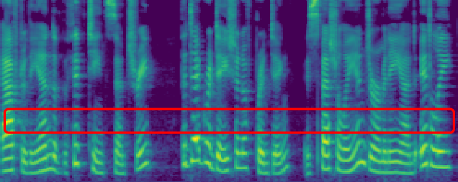
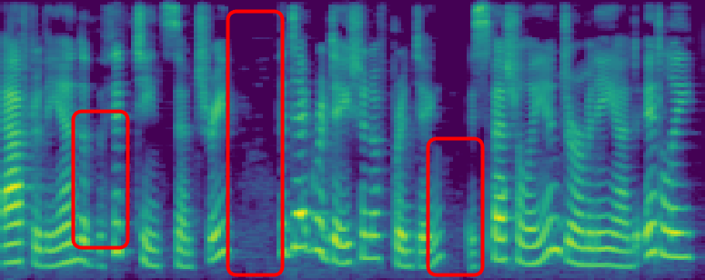
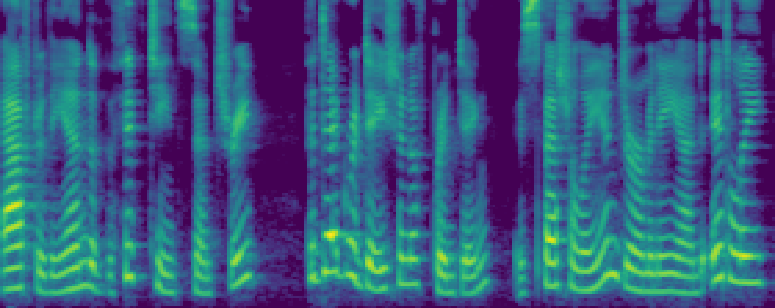
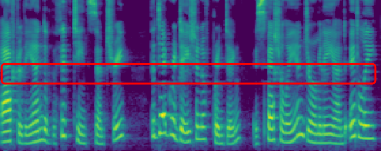
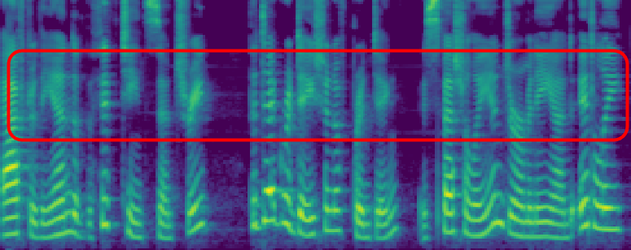
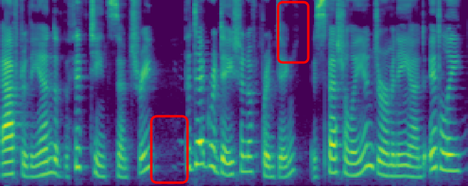
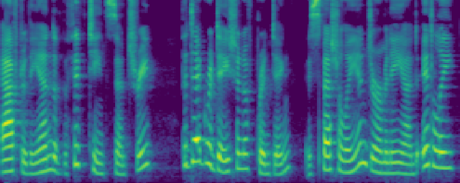
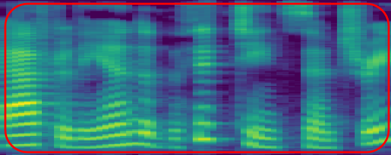

Abstract: Audio watermarking has been used for provenance verification of AI-generated content from generative models. It spawns a wealth of applications for detecting AI-generated speech, protecting the music IP, and defending against voice cloning attacks. Generally, audio watermarking should be robust against removal attacks that distort the signal to evade detection. Many audio watermarking schemes claim robustness; however, these claims are often validated in isolation against a limited set of attacks. There is no systematic, empirical evaluation of robustness against a comprehensive set of removal attacks in the audio domain. This uncertainty complicates the deployment of watermarking schemes in practice. In this paper, we survey and evaluate whether recent audio watermarking schemes claiming robustness can withstand a broad range of removal attacks. First, we propose a taxonomy for 25 audio watermarking schemes. Second, we summarize the audio watermark technologies and their potential vulnerabilities. Third, we conduct a large-scale, comprehensive measurement study to evaluate the robustness of existing watermarking schemes. To facilitate this analysis, we develop an evaluation framework encompassing a total of 22 types of watermark removal attacks (109 different configurations). Our framework covers signal-level distortions, physical-level distortions, and AI-induced distortions. We identify 8 new attacks that are highly effective against all watermarks and discover 11 key findings that illustrate their fundamental weaknesses. Our study reveals critical insights: none of the surveyed watermarking schemes is robust enough to withstand all tested distortions in practice. The extensive evaluation offers a holistic view of how well— or poorly—current watermarking schemes fare under real-world threats.
| Unwatermarked | Timbre | AudioSeal | WavMark | SilentCipher | |
|---|---|---|---|---|---|
| LJ | |||||
| Spectrograms |  |  |  | ||
| M4 | [audio] | [audio] | [audio] | [audio] | [audio] |
| FSVC | Patchwork | Norm-Space | audiowmark | RobustDNN | |
|---|---|---|---|---|---|
| LJ | |||||
| Spectrograms |  |  |  |  |  |
| M4 | [audio] | [audio] | [audio] | [audio] | [audio] |
| Timbre | AudioSeal | WavMark | SilentCipher | FSVC | Patchwork | Norm-Space | audiowmark | ||
|---|---|---|---|---|---|---|---|---|---|
| AdaIn-VC (zero-shot) |
RM WM | ||||||||
| Acc. | 65.34% | 59.59% | 51.26% | 49.78% | 57.18% | 49.71% | 49.86% | 49.29% | |
| ADD WM | |||||||||
| Acc. | 93.06% | 49.10% | 49.27% | 50.30% | 51.35% | 49.88% | 49.83% | ||
| FragmentVC (zero-shot) |
RM WM | ||||||||
| Acc. | 56.28% | 49.76% | 50.37% | 53.54% | 51.35% | 49.24% | 50.10% | ||
| ADD WM | |||||||||
| Acc. | 58.38% | 50.00% | 49.99% | 52.50% | 51.15% | 49.66% | 49.81% | ||
| MediumVC (zero-shot) |
RM WM | ||||||||
| Acc. | 48.52% | 53.64% | 49.70% | 49.96% | 63.66% | 53.03% | 50.25% | 50.83% | |
| ADD WM | |||||||||
| Acc. | 49.08% | 50.90% | 50.55% | 52.25% | 52.91% | 50.55% | 50.78% | ||
| YourTTS VC (zero-shot) |
RM WM | ||||||||
| Acc. | 59.64% | 57.50% | 50.06% | 49.61% | 53.31% | 52.26% | 50.34% | 50.40% | |
| ADD WM | |||||||||
| Acc. | 62.16% | 51.26% | 50.05% | 52.98% | 51.51% | 49.73% | 49.90% | ||
| RVC (adaptive) |
RM WM | ||||||||
| Acc. | 55.58% | 49.96% | 49.97% | 57.88% | 49.95% | 50.01% | 49.50% | ||
| ADD WM | |||||||||
| Acc. | 100.00% | 54.34% | 49.39% | 52.48% | 56.44% | 50.41% | 50.46% | ||
| Timbre | AudioSeal | WavMark | SilentCipher | FSVC | Patchwork | Norm-Space | audiowmark | ||
|---|---|---|---|---|---|---|---|---|---|
| Tacotron2 | Griffin-Lim | ||||||||
| Acc. | 100.00% | 49.83% | 49.91% | 58.50% | 59.29% | 50.20% | 49.69% | ||
| HiFi-GAN | |||||||||
| Acc. | 91.36% | 50.14% | 50.06% | 58.08% | 50.16% | 49.33% | 50.45% | ||
| HiFi-GAN* | |||||||||
| Acc. | 100.00% | 78.56% | 50.22% | 59.03% | 63.69% | 50.58% | 51.49% | ||
| Fastspeech2 | Griffin-Lim | ||||||||
| Acc. | 100.00% | 49.64% | 49.39% | 67.39% | 62.96% | 50.13% | 49.84% | ||
| HiFi-GAN | |||||||||
| Acc. | 92.48% | 50.86% | 49.80% | 68.94% | 54.61% | 50.04% | 50.55% | ||
| HiFi-GAN* | |||||||||
| Acc. | 100.00% | 83.54% | 49.45% | 69.71% | 65.38% | 49.56% | 50.33% | ||
| YourTTS (zero-shot) |
Audio Sample |
||||||||
| Acc. | 54.20% | 53.81% | 49.18% | 49.67% | 54.59% | 51.68% | 46.80% | 49.45% | |
We re-record audio samples from the LJ Speech dataset using various equipment at different distances and report the Bit Recovery Accuracy (Acc.) for each watermarking technique on the LJ Speech dataset.
| Timbre | AudioSeal | WavMark | SilentCipher | FSVC | Patchwork | Norm-Space | audiowmark | RobustDNN | ||
|---|---|---|---|---|---|---|---|---|---|---|
| Close (0.5m) |
Default | |||||||||
| Acc. | 100.00% | 63.75% | 97.50% | 53.00% | 55.00% | 77.50% | 52.50% | 50.00% | 72.34% | |
| HyperX Mic | ||||||||||
| Acc. | 100.00% | 42.50% | 98.75% | 62.00% | 62.50% | 68.75% | 47.50% | 52.50% | 63.01% | |
| Logitech Spk | ||||||||||
| Acc. | 100.00% | 53.75% | 100.00% | 48.00% | 60.00% | 70.00% | 51.25% | 53.75% | 72.46% | |
| Medium (2.5m) |
Default | |||||||||
| Acc. | 88.00% | 48.75% | 56.25% | 51.50% | 62.50% | 67.50% | 53.75% | 48.75% | 61.33% | |
| Far (5m) |
Default | |||||||||
| Acc. | 64.00% | 55.00% | 43.75% | 52.00% | 48.75% | 63.75% | 51.25% | 48.75% | 59.49% | |
We directly manipulate the audio signal to attempt erasing or degrading the watermark using various signal-level distortions. The distorted audio samples and their corresponding Bits Recovery Accuracy (Acc.) are reported for each watermarking technique on the LJ Speech dataset.
| Timbre | AudioSeal | WavMark | SilentCipher | FSVC | Patchwork | Norm-Space | audiowmark | RobustDNN | ||
|---|---|---|---|---|---|---|---|---|---|---|
| Impulse Response Augmentation | ||||||||||
| Pitch Shift (in cents) |
||||||||||
| +100 | ||||||||||
| Acc. | 6.37% | 60.95% | 50.19% | 49.85% | 59.62% | 55.28% | 50.11% | 50.23% | 63.88% | |
| Time Stretch | ||||||||||
| 0.75x | ||||||||||
| Acc. | 100.00% | 51.85% | 99.99% | 50.87% | 66.15% | 96.94% | 50.54% | 49.83% | 61.29% | |
| 0.9x | ||||||||||
| Acc. | 100% | 50.51% | 100.00% | 50.07% | 64.01% | 97.81% | 49.81% | 49.83% | 62.98% | |
| Gaussian Noise (SNR) |
||||||||||
| 20dB | ||||||||||
| Acc. | 50.05% | 53.36% | 49.60% | 49.81% | 51.51% | 49.87% | 50.79% | 50.00% | 61.14% | |
| 30dB | ||||||||||
| Acc. | 100.00% | 99.98% | 97.47% | 51.56% | 99.36% | 99.99% | 100.00% | 68.01% | 100.00% | |
| Bitcrush (bit depth) |
||||||||||
| 6 | ||||||||||
| Acc. | 99.40% | 93.89% | 50.13% | 49.50% | 92.20% | 98.81% | 86.48% | 50.10% | 100.00% | |
| 8 | ||||||||||
| Acc. | 100.00% | 99.97% | 93.61% | 51.29% | 97.74% | 99.99% | 98.69% | 61.54% | 100.00% | |
| MP3 Compression | 8kbps | |||||||||
| Acc. | 89.00% | 80.12% | 50.17% | 50.12% | 92.64% | 67.53% | 76.87% | 50.09% | 79.54% | |
| 16kbps | ||||||||||
| Acc. | 99.99% | 99.64% | 61.33% | 50.42% | 98.84% | 85.19% | 87.11% | 49.72% | 96.28% | |
| Background Noise (SNR) |
||||||||||
| 5dB | ||||||||||
| Acc. | 92.81% | 90.85% | 82.71% | 71.46% | 83.78% | 81.52% | 75.46% | 64.70% | 99.84% | |
| 20dB | ||||||||||
| Acc. | 99.43% | 98.85% | 97.76% | 85.52% | 95.59% | 98.61% | 98.19% | 80.18% | 100.00% | |
| Cropping Audio (% of audio cut) |
25% | |||||||||
| Acc. | 100.00% | 59.05% | 99.04% | 82.23% | 51.47% | 87.91% | 49.82% | 96.14% | 63.05% | |
| 50% | ||||||||||
| Acc. | 100.00% | 59.05% | 97.08% | 74.29% | 50.45% | 78.06% | 49.49% | 90.09% | 64.90% | |
| 75% | ||||||||||
| Acc. | 100.00% | 58.96% | 84.16% | 63.26% | 50.13% | 69.01% | 49.83% | 64.89% | 63.97% | |
| 90% | ||||||||||
| Acc. | 99.90% | 57.19% | 56.10% | 53.27% | 50.21% | 62.65% | 49.42% | 50.16% | 63.45% | |
| 95% | ||||||||||
| Acc. | 99.08% | 57.02% | 49.90% | 49.75% | 50.38% | 57.65% | 50.44% | 49.36% | 63.09% | |
| 97% | ||||||||||
| Acc. | 96.77% | 56.38% | 49.53% | 50.08% | 49.84% | 54.44% | 49.56% | 50.06% | 63.31% | |
| 99% | ||||||||||
| Acc. | 52.12% | 50.54% | 50.02% | 49.78% | 50.74% | 49.94% | 49.71% | 62.78% | ||
| High-Pass Filter | 500Hz | |||||||||
| Acc. | 100.00% | 100.00% | 100.75% | 95.50% | 99.93% | 100.00% | 74.10% | 98.35% | 100.00% | |
| Low-Pass Filter | ||||||||||
| 2000Hz | ||||||||||
| Acc. | 84.38% | 100.00% | 50.33% | 78.25% | 99.71% | 76.47% | 95.92% | 50.09% | 62.32% | |
| 3500Hz | ||||||||||
| Acc. | 100.00% | 100.00% | 100.00% | 89.40% | 99.77% | 99.93% | 97.14% | 97.64% | 99.71% | |
| Sample Suppression (% of samples set to 0) |
||||||||||
| 1% | ||||||||||
| Acc. | 99.99% | 99.98% | 74.67% | 51.39% | 86.89% | 93.93% | 99.17% | 51.45% | 99.85% | |
| 10% | ||||||||||
| Acc. | 99.97% | 99.92% | 60.64% | 50.47% | 80.78% | 87.82% | 97.37% | 50.13% | 99.66% | |
| Resampling | ||||||||||
| 4kHz | ||||||||||
| Acc. | 99.34% | 100.00% | 50.74% | 75.12% | 99.27% | 61.43% | 93.35% | 49.88% | 62.31% | |
| 8kHz | ||||||||||
| Acc. | 100.00% | 100.00% | 100.00% | 89.82% | 99.69% | 99.95% | 96.65% | 95.96% | 99.85% | |